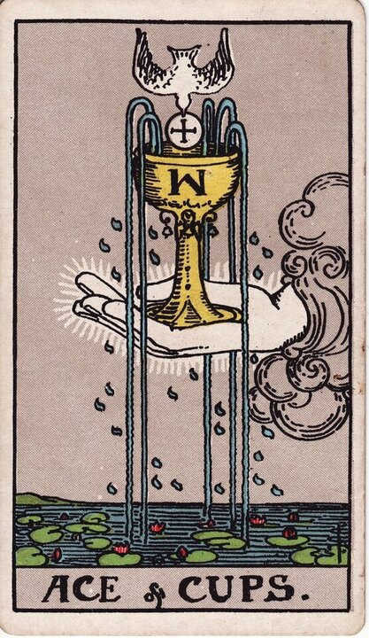

Minor Arcana · Suit of Cups
Ace of Cups Tarot Card Meaning
The Ace of Cups is the heart overflowing — new love, deep feeling, an open emotional beginning. Want to know what it means in your spread? Every reader on our line is hand-vetted — connect in under 60 seconds, $1 for your first minute, hang up anytime.
- Hand-vetted readers
- Available 24/7
- Hang up anytime

Ace of Cups — What It Shows
A hand reaches from a cloud holding a chalice that overflows with five streams of water, a dove descending toward it with a wafer. Below, a calm sea is dotted with lotus flowers. Everything pours, blooms, and opens. The Ace of Cups is the first drop of the water suit — the pure source of love, compassion, intuition, and emotional life before it takes any particular shape. It's not a relationship yet; it's the wellspring a relationship (or any deep feeling) can flow from.
Ace of Cups Upright Meaning
Upright, the Ace of Cups is a new emotional beginning and an open heart. Love offered or received, a connection reaching the level of real feeling, compassion flooding back in, or a creative and spiritual wellspring opening. Its core message is receptivity — be open enough to let the good in, because the cup is full and tilting toward you.
Ace of Cups Reversed Meaning
Reversed, the cup spills or stays sealed. Blocked, repressed, or guarded emotions; a love withheld or unreceived; emotional emptiness; or a heart not yet ready to open after hurt. It's rarely "love is impossible" — more "the channel is closed for now."
Ace of Cups in Love & Relationships
In love this is one of the most hopeful cards in the deck — new love, a connection deepening into genuine feeling, reconciliation from the heart, or love being offered to you. Example: a caller unsure whether a budding connection had real depth drew the Ace of Cups; the read affirmed that genuine feeling is present and flowing — the work was staying open enough to receive it rather than guarding against it.
Ace of Cups in Career & Money
For work it's a creative awakening, a role that finally engages your heart, renewed passion, or a compassionate new chapter. Example: someone drained in a logical-but-empty job pulled this card; the message framed a new direction that reconnects them with what they actually care about — fulfilment over pure function.
Ace of Cups as Advice
As advice: open up. Lead with the heart, let love and compassion in (including for yourself), and don't armour against a good thing that's genuinely arriving.
Ace of Cups Reversed in Love & Career
Reversed, this card deserves a closer look because it rarely means "never." In love, it's a heart that's closed for protection — guarding after past hurt, withholding feeling, an offer you can't yet receive, or a connection where the emotion is real but stuck behind a wall. It often points to readiness, not absence. In career, reversed it's creative block, emotional emptiness in work that looks fine on paper, or a passion that's been suppressed for practicality. In both, the reversed Ace's remedy is the same: address what closed the channel before forcing the flow. A live reader can tell you whether the block is timing, fear, or a genuine no.
What People Ask About the Ace of Cups
The questions readers hear most about this card:
"Does it mean new love is coming?"
Very often — it's a leading love card, especially with other Cups.
"Is the Ace of Cups a pregnancy card?"
It can signal new life or a new creation; surrounding cards clarify.
"Ace of Cups as feelings?"
Open, tender, deeply felt — the start of real emotion toward you.
"Does it mean someone will reach out?"
It can — love or feeling being offered, sometimes a heartfelt message.
Ace of Cups — Yes or No?
Upright: a strong yes, especially for love and emotional questions. Reversed: "not yet," or the heart isn't open enough to receive it.
Ace of Cups Timing in a Reading
Timing is the least precise thing tarot does, so treat this as a lean, not a date. As a water-suit Ace, the Ace of Cups tends to move more gently than the fiery Aces — readers often place it within weeks, unfolding as the heart opens rather than on a fixed day. It's a beginning, so it points to the start of a feeling more than its resolution. Reversed, the timing stretches until the emotional block clears. A live reader reads timing from the full spread and your question far more reliably than the card alone.
Ace of Cups Card Combinations
Context changes everything — a few pairings readers see often:
Ace of Cups + Two of Cups
New love becoming a genuine mutual partnership.
Ace of Cups + The Sun
Joyful, open-hearted happiness — love that thrives in the light.
Ace of Cups + Five of Cups (rev)
Healing after grief — the heart reopening after loss.
Ace of Cups in a Tarot Reading
A meanings page is the map; a live reading is the territory. The Ace of Cups changes with its position, the cards around it, and your question — which is what a hand-vetted reader interprets for you. See the full Suit of Cups, all 56 cards on the Minor Arcana hub, or start a phone tarot reading.
← Suit of Cups · Next: Two of Cups →
What Does the Ace of Cups Mean for You?
A meanings list is the map; a live reading is the territory. We'll connect you with the right hand-vetted tarot reader in under 60 seconds. $1/min first call · 15 minutes for $10 · hang up anytime · 100% satisfaction promise.
Call (888) 920-6662 NowAce of Cups — Frequently Asked Questions
What does the Ace of Cups mean?
A new emotional beginning — love, compassion, and an open, overflowing heart.
What does it mean reversed?
Blocked or repressed emotions, emptiness, or a heart not yet ready to open.
What does the Ace of Cups mean in love?
One of the best love cards — new love, deep connection, or love being offered.
Is it a yes or no card?
Upright, a strong yes for love and emotion. Reversed leans "not yet."
How much does a reading cost?
First-time callers pay $1/min, or 15 minutes for $10, and you can hang up anytime.
Get Your Tarot Reading Now
Connected to a hand-vetted reader in under 60 seconds, the cards pulled on your real question, and you hang up with clarity.
Call (888) 920-6662